Introduction
In this tutorial we will use the BEAST2 package BDMM-Prime to perform a Bayesian phylogenetic analysis of an influenza data set using the multi-type birth-death model (Kühnert et al., 2016).
The multi-type birth-death model can be used to explain sequence data which have evolved within a population that is clearly divided into separate compartments, demes, or types. (We will use the terms deme, partition and type interchangeably here.)
The types can be geographical locations, as in our example, but the sequences can also be separated through other means than that, e.g. by a specific drug resistance mutation (strains can develop/lose drug resistance and thus move between types, but can not transfer between types otherwise), or location in the body (for example, for localised infections caused by the same agent).
In this tutorial you will learn how to apply this model to H3N2 sequences sampled from human hosts in two different geographical locations. These two locations will be our two types in the analysis.
The data set used in this tutorial is a thinned 60 sequence subset of the 980 sequence H3N2 influenza data set used in the publication (Vaughan et al., 2014), which in turn was assembled from publicly-available data sets provided by various authors on GenBank.
(The BDMM-Prime package can be used for a wide range of single- and multi-type birth-death-skyline (BDSKY) model analyses, including birth-death population trajectory inference (Vaughan & Stadler, 2025). See the full documentation at the package website for more details.)
Software Requirements
BEAST2 - Bayesian Evolutionary Analysis Sampling Trees
BEAST2 is a free software package for Bayesian evolutionary analysis of molecular sequences using MCMC and strictly oriented toward inference using rooted, time-measured phylogenetic trees. This tutorial is written for BEAST v2.7.7 (Bouckaert et al., 2014).
BEAUti2 - Bayesian Evolutionary Analysis Utility
BEAUti2 is a graphical user interface tool for generating BEAST2 XML configuration files.
Both BEAST2 and BEAUti2 are Java programs, which means that the exact same code runs on all platforms. For us it simply means that the interface will be the same on all platforms. The screenshots used in this tutorial are taken on a Mac OS X computer; however, both programs will have the same layout and functionality on both Windows and Linux. BEAUti2 is provided as a part of the BEAST2 package so you do not need to install it separately.
TreeAnnotator
TreeAnnotator is used to produce a summary tree from the posterior sample of trees using one of the available algorithms. It can also be used to summarise and visualise the posterior estimates of other tree parameters (e.g. node height).
TreeAnnotator is provided as a part of the BEAST2 package so you do not need to install it separately.
Tracer
Tracer (https://github.com/beast-dev/tracer/releases/) is used to summarize the posterior estimates of the various parameters sampled by the Markov Chain. This program can be used for visual inspection and to assess convergence. It helps to quickly view median estimates and 95% highest posterior density intervals of the parameters, and calculates the effective sample sizes (ESS) of parameters. It can also be used to investigate potential parameter correlations. We will be using Tracer v1.7.3.
IcyTree
IcyTree (https://icytree.org) is a browser-based phylogenetic tree viewer. It is intended for rapid visualisation of phylogenetic tree files. It can also render phylogenetic networks provided in extended Newick format. IcyTree is compatible with current versions of Mozilla Firefox and Google Chrome.
Installing the BDMM-Prime package
You can install the BDMM-Prime package via BEAUti’s package manager. To do this, follow these steps:
Start BEAUti;
In the application menu, File > Manage Packages.
Find BDMM-Prime in the list of packages shown, select it and then click Install/Upgrade.
The BEAUTi window should look similar to what is shown below.
Note the actual version of BDMM-Prime may differ from the version shown in the figure, which is perfectly normal.
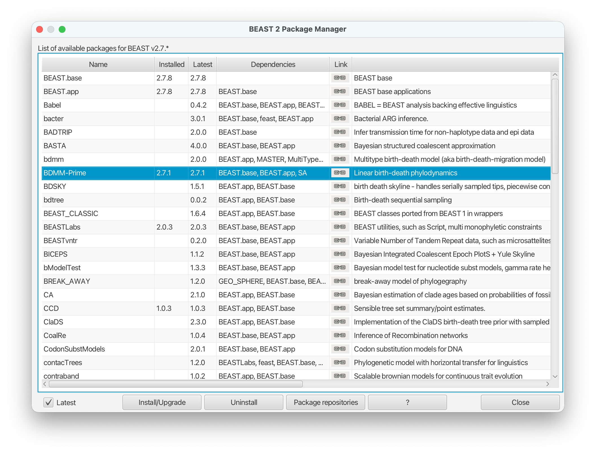
Finally, restart BEAUti. The restart is necessary for the packages to be successfully installed.
If you get an error message stating that you are missing a package on which BDMM-Prime depends, install that package manually using the package manager as done above, and restart BEAUti again.
Setting up the analysis using BEAUti
Loading the data
We will first load in our example sequence data. In our case, these data are stored in a FASTA file, the first few lines of which look like this (the sequences have been truncated for better readability):
> EU856841_HongKong_2005.34246575
-----------ATGAAGACTATCATTGCTTTGAGCTACATTCTATGTCTGGTTTTCGCTC...
> EU856989_HongKong_2002.58356164
-----------ATGAAGACTATCATTGCTTTGAGCTACATTCTATGTCTGGTTTTCGCTC...
> CY039495_HongKong_2004.5890411
-----------ATGAAGACTATCATTGCTTTGAGCTACATTCTATGTCTGGTTTTCGCTC...
> EU856853_HongKong_2001.17808219
-----------ATGAAGACTATCATTGCTTTGAGCTACATTTTATGTCTGGTTTTCGCTC...
> EU857026_HongKong_2003.51232877
-----------ATGAAGGCTATCATTGCTTTGAGCTACATTCTATGTCTGGTTTTCGCTC...
The lines beginning with “>” are labels for the sequences immediately following. In general, these labels have no special format, but in this file each label is an underscore-delimited triple. The first element of each triple is the GenBank accession number of the sequence, the second is the geographical region from which it was sampled, and the third is the time at which it was sampled measured in calendar years or fractions thereof.
In this tutorial we will be using the influenza sequence data which can be found in the examples folder of the BDMM-Prime package.
To make it easier to find when loading the alignment, you can optionally set the working directory of BEAST2 to BDMM-Prime.
This will make BEAUTi open the appropriate package folder when you look for the alignment.
To set the working directory, select File > Set working dir > BDMM-Prime, as shown below.
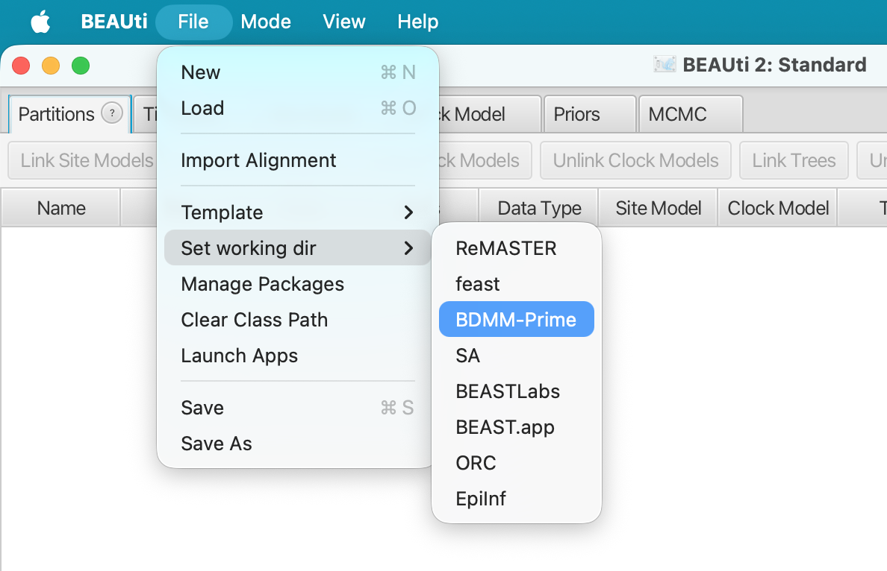
To load the file, select File > Import Alignment.
This will open a file selection dialog box. The example influenza sequence data
file is named h3n2_2deme.fna.
Assuming you have followed the previous step to set the working directory, this can be found in the examples/ directory shown when the file selection dialog box appears.
In case you have not followed the previous step you will have to locate the folder containing the BDMM-Prime package and look for the examples/ folder there.
Once the sequence file is loaded, your BEAUti screen should look similar to that shown below:
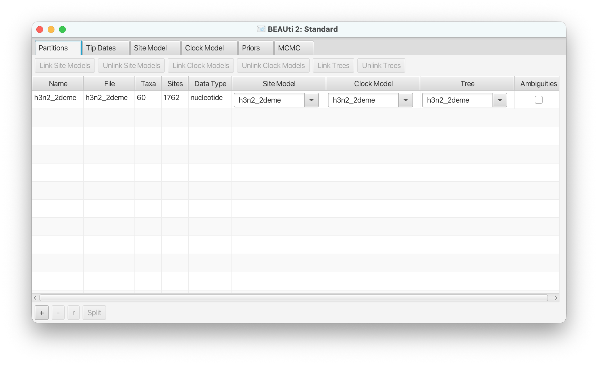
Setting up dates
Once the data is loaded, the next step is to specify the times at which the sequences were sampled:
Select the Tip Dates panel.
Check the Use tip dates checkbox.
Click the Auto-configure button at the top-right of the panel. This opens a dialog that allows sample times to be loaded from a file or inferred (guessed) from the sequence labels.
Because the times are included as the last element of the underscore-delimited sequence names, choose the use everything radio button and select after last from the drop-down menu. The default delimiter is already the underscore, so there is no need to change that.
The date parsing setup will look as shown in below.
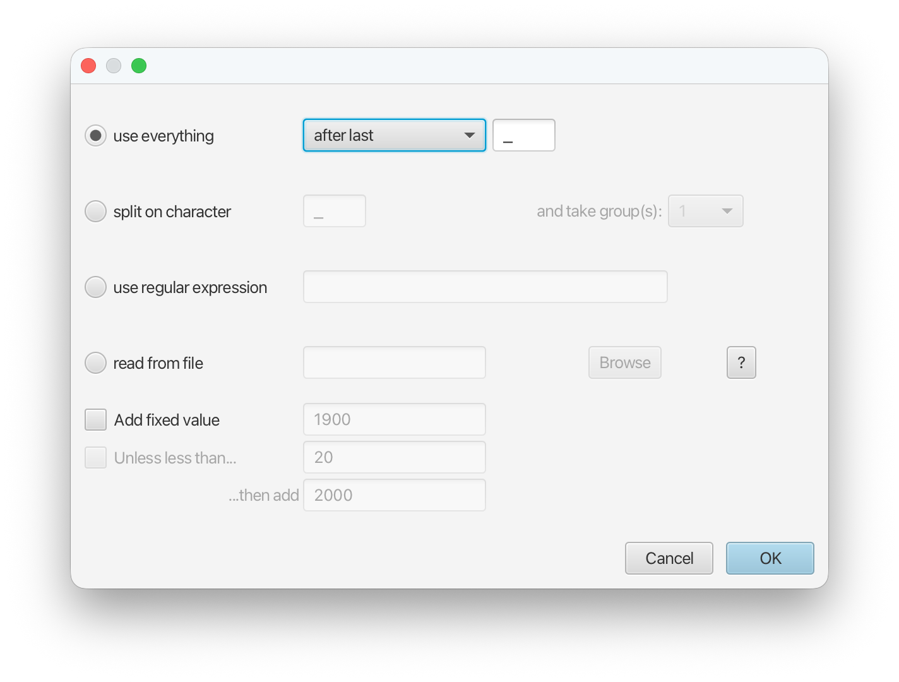
After clicking OK you should find that the tip date table is filled with
times that match those in the sequence headers, and that the last column of the
table contains heights, i.e. times before most recent sample, calculated from the times.
The BEAUTi panel should look as shown below.
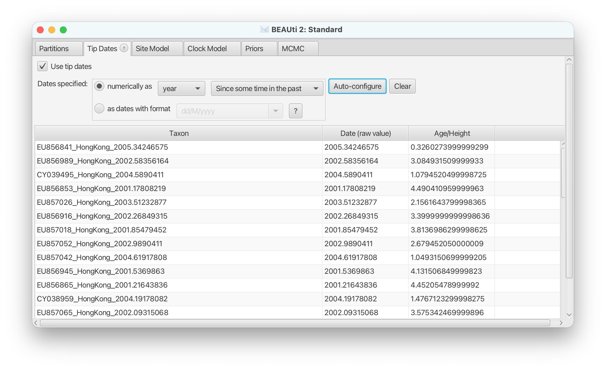
Setting the substitution model
For this analysis, we will use the HKY substitution model, with Gamma-distributed site to site rate heterogeneity to account for variations in substitution rate across the genome.
To approximate the continuous gamma rate distribution BEAST2 uses the discrete gamma distribution, where sites are divided into k equally probable rate categories.
In general, 4-6 categories work well for most datasets, while having more categories involve a lot of computation at little precision gain, so we set the Gamma Category Count to 4.
We would also like to estimate the Shape parameter, which describes the shape of the continuous gamma distribution we approximate.
The HKY substitution model is parameterized by a set of equlibrium base frequences and the transition/transversion rate ratio, $\kappa$. It is usually safe to estimate $\kappa$ as the sequence data usually contain relatively strong signal for the value. It is also common to estimate the equilibrium frequencies, although here we will fix them to their empirical values (averages computed directly from the sequence alignment) to speed things up slightly for this tutorial analysis.
Switch to the Site Model panel.
Set up the Gamma Category Count to 4.
Leave the Shape parameter initialised to 1.0, with its estimate box checked.
Select HKY from the Subst Model drop-down menu.
Set Frequencies to Empirical.
The BEAUti panel should now look as shown below:
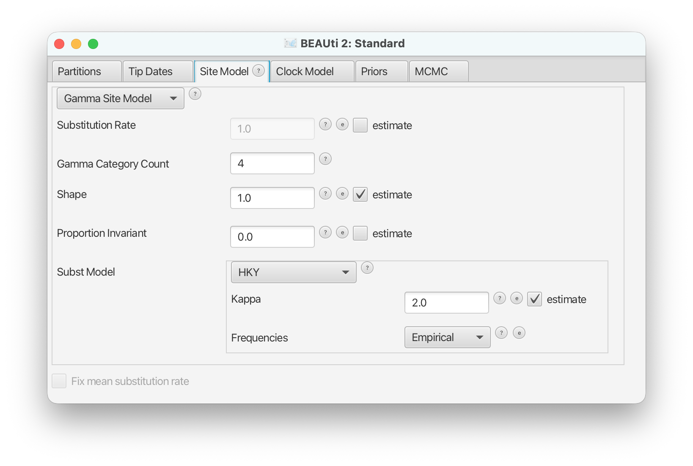
Note that the Substitution rate defined on this panel should not be estimated - we use the Clock rate defined in the Clock Model panel to
determine the average per unit time rate of sequence evolution.
This way, the Substitution rate is not actually a rate, but rather a rate multiplier that we fix to 1 to allow parameter identifiability.
Setting the clock model
To speed up the analysis we will assume a strict clock for this small dataset. However, the selection of a clock model for a different, real analysis should not be taken lightly. Since our alignment contains sequences sampled at different times and those times are measured in years, we must use a clock rate expressed in units of expected substitutions per site per year. Usually the precise value is unknown and so the default behaviour of BEAUti is to assume this rate has to be estimated.
We won’t change this default setup here, but to speed up mixing we will choose starting value for the clock rate inference which we know from other research to be much closer to the true substitution rate than the default value.
Switch to the Clock Model panel.
Set the starting value of the
Clock rateto 0.005. (Implicit units are substitutions per site per year.)The
Clock Modelpanel should now look as shown below.
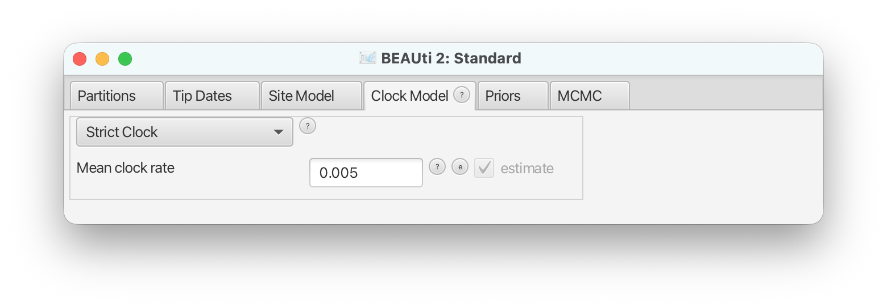
Adjusting priors
Selecting the tree prior.
The primary functionality that BDMM-Prime provides is a prior probability distribution
over phylogenetic trees under a multi-type birth-death-sampling model. Here we configure
the particular birth-death model we will use to relate the tree to the various population-level
parameters we’d like to learn about.
Select the Priors panel.
To choose the BDMM-Prime tree prior, find the drop-down menu next to Tree.t:h3n2_2deme and select BDMMPrime.
Defining the tip types
The next thing we want to do is to specify the locations associated with each of the samples included in our analysis.
Expand the BDMM-Prime tree prior by clicking the arrow to the left of Tree.t:h3n2_2deme.
Scroll down to end of the tree prior section and find the table associating tree leaves with locations. Notice that the sample names have the form ID_Location_Date.
To extract the locations from the sample names, click the Auto-configure button, select split on character, ensure “_” is specified as the delimiter, and select “2” from the take group(s) drop-down menu. Once this is complete, press “Ok”.
The table should now be populated with types extracted from the sample names.
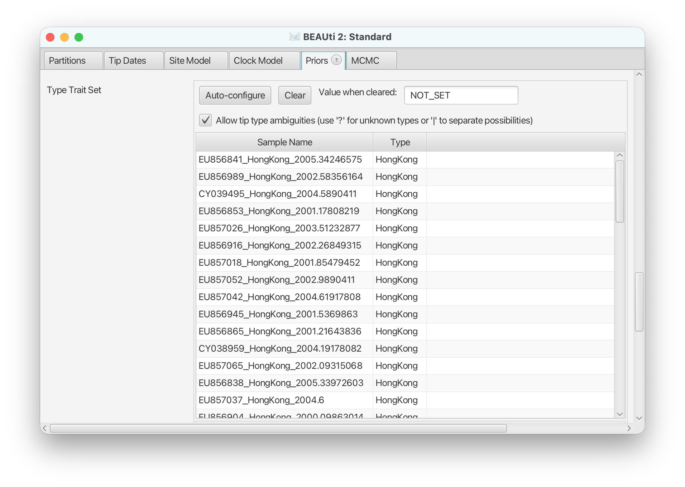
Configuring the multi-type model
Now we get to the main part of the analysis setup, where we decide exactly how to model the generation of our data. In our case, we want to model a small part of the global transmission dynamics of H3N2.
The first thing to do is to is to select our desired parameterization of the birth-death model. In our case, as we’re analysing pathogen sequences in an attempt to reconstruct transmission dynamics, we’ll use the epidemiological parameterization.
Scroll to the top of the tree prior and select Epi Parameterization from the drop-down menu at the top of the expanded section.
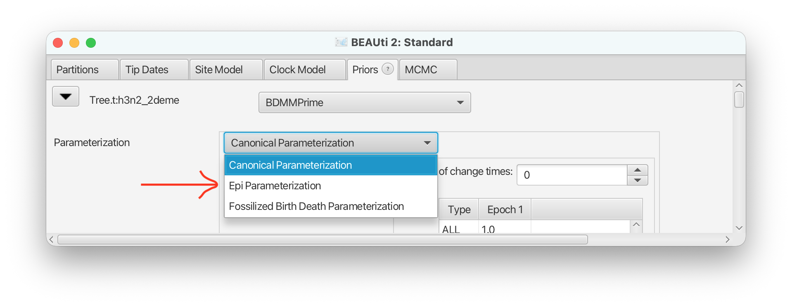
With this done, the next task is to define the dimensionality and initial values of the multi-type birth-death parameters. In BDMM-Prime, each of these parameters is considered a “skyline parameter” which can change in a piecewise-constant fashion through time.
The first skyline parameter to consider is the Re parameter, representing the effective reproductive number. By default parameter values are assumed to be the same across all types, however we want to allow the reproductive number to take location-specific values.
For the Re skyline parameter, uncheck the Scalar values check box to allow this parameter to take type-dependent values.
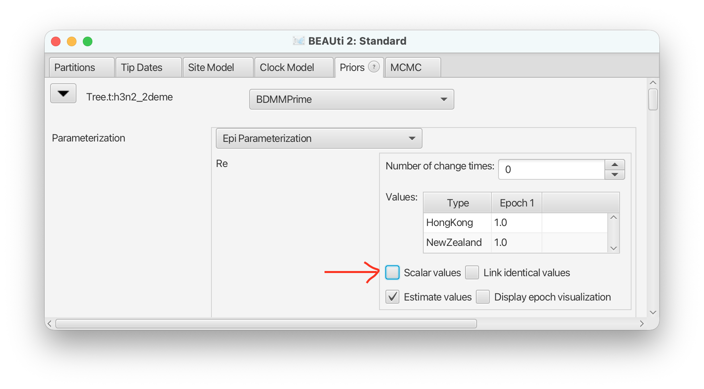
The next parameter is the “become uninfectious rate” parameter, representing the rate at which infected individuals become uninfectious. This parameter includes the rate at which individuals are recovering on their own, together with the rate at which they are removed from the population due to the sampling process. Since it is dictated by disease progression, this parameter is sometimes assumed to be a function of the pathogen itself rather than location. That said, there are many reasons that it may be location-dependent in reality. (Can you think of any?)
In any case, for the sake of this tutorial we will assume here that it takes a single value which is shared among types. Furthermore, as influenza infections often take a relatively short time to pass, we will initialise this value to correspond to an infectious period of 1 week.
Find the Become Uninfectious Rate parameter, double-click the starting value and change it to 52 (per year). Be sure to press “Enter” to cause BEAUti to accept the new value.
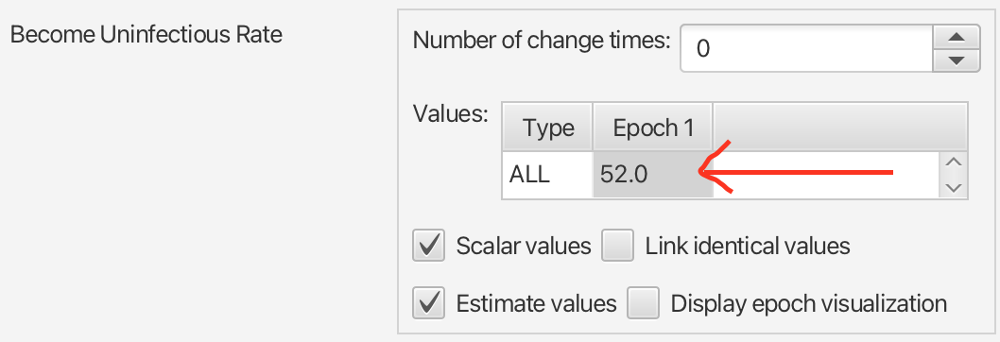
Now let’s consider the Sampling Proportion parameter. This parameter requires special care, as the sampling assumptions of the model can dramatically influence inference results. In our case we want (a) to allow for type-dependent sampling proportions and (b) to fix the sampling proportion to zero for all times earlier than the first sample. Allowing for type-dependent sampling proportions prevents us from having to assume that the number of samples we have in each location are proportional to the infected population in each of these individuals. On the other hand, setting the sampling proportion to zero prevents the model from interpreting the lack of samples prior to a specific date as evidence for the absence of infected hosts in these earlier times.
In BDMM-Prime, this configuration is reasonably simple to configure.
Find the Sampling Proportion parameter, then follow these steps:
- Uncheck the Scalar value checkbox to allow for type-dependent values.
- Check Display visualization to see the distribution of sample times relative to the most recent sample.
- Set the Number of change times value to 1. (Notice the appearance of the epoch boundary marker on the visualisation.)
- Set the change time for the boundary between epoch 1 and 2 to 5.6. (Notice that this value ensures the oldest sample remains in epoch 1.)
- In the Values table, double-click the entries corresponding to the sampling proportion values for Epoch 2 and change each to 0.0, remembering to press “enter” after each change.
Note: skyline parameter values of 0 are always fixed in the analysis, regardless of whether or not the “estimate values” option is checked.
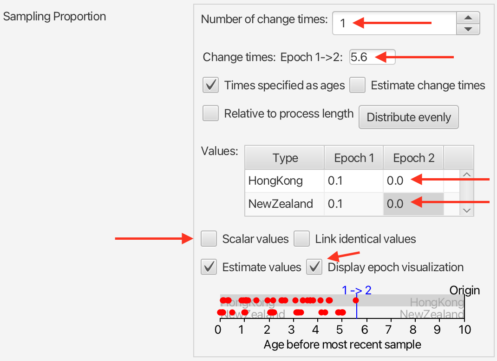
Finally, we need to define how lineages change type in our multi-type model. Like BDMM, BDMM-Prime allows both direct “migration” as well as “birth to a new type” styles of multi-type models. Given we are modelling the movement of infected influenza hosts, migration suits our situation best. We also acknowledge that migration rates between different pairs of types/locations may be different from one another.
To incorporate these decisions, follow these instructions:
Find the Migration Rate parameter, then:
- Double-click on the Value and change it from it’s default to the smaller rate of 0.1 (any infected individual has a roughly 10% chance of moving between the two locations in any given year).
- Uncheck the Scalar values checkbox to allow rates to vary between pairs of locations.
- Check the Estimate values checkbox to ensure these migration rates are estimated.
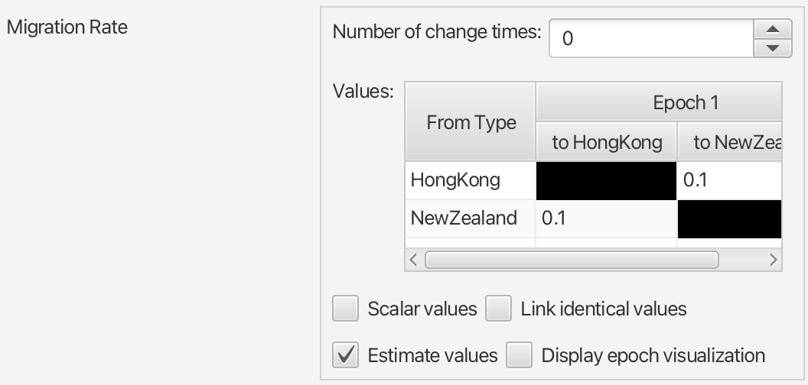
Setting up other priors
BEAST2 provides a default prior distribution for each of the parameters of your model which you’ve chosen to estimate. These priors are often very broad, and are “improper” - so broad that the area under the distribution cannot be computed. Thus it is important to go through the parameters and set priors according to the information we have about our dataset.
The first important parameter is the effective reproductive number, Re. In epidemiology, the reproductive number of an epidemic is the number of secondary cases one case generates on average over the course of its infectious period. (A more fundamental quantity, the basic reproductive number R0, is the same but applied to a naive host population.) Values greater than 1 indicate expansion of the infected host population, while smaller values indicate contraction.
In practice, Re values tend to be within an order of magnitude of 1.0. Thus we will apply a Log Normal prior distribution to this parameter, centred on 1.0.
Collapse the tree prior by again clicking the arrow head to the left of Tree.t:h3n2_2deme.
Expand the Re prior by clicking the arrow head to the left of ReEpi.t:h3n2_2deme.
Select LogNormal from the drop-down list of distributions.
Set the M value to 0.0 and the S value to 0.5.
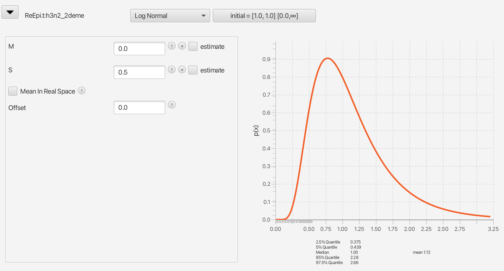
Next, we consider the prior on the “become uninfectious rate”. As mentioned above, this rate describes how quickly individual infected individuals become uninfectious to the rest of the population, be that through recovery, quarantine, or some other process.
We know that for influenza an average infection lasts around a week. What rate value does this correspond to? To determine this, consider that our rates describe the probability per unit time that the corresponding event happens on a single lineage. The time unit in this case is “year”, since our tip dates were specified in fractional years. Thus the become uninfectious rate value specifies the probability per year (calculated instantaneously) that an individual becomes uninfectious. An average infectious interval of one week (1/52 years) corresponds to an average become uninfectious rate of 1/(1/52)=52 in units of inverse years.
For our analysis we will therefore place a Log Normal prior on the become uninfectious parameter with a mean of 52 and an S parameter to allow for some variation around this mean.
Expand the become uninfectious prior by clicking the arrow to the left of becomeUninfectiousRateEpi.t:h3n2_2deme.
Select Log Normal from the drop-down list of distributions.
Set the M value to 52.0 and the S value to 0.5.
Ensure the Mean in Real Space checkbox is checked.
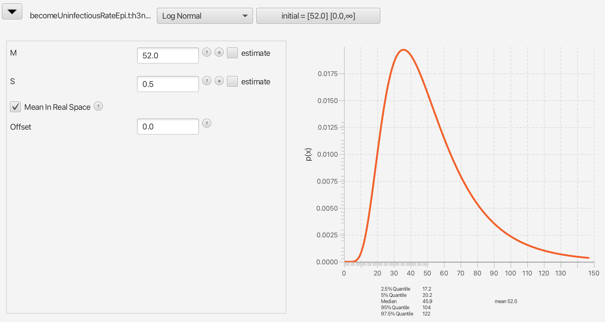
We now consider the sampling proportion prior. We will set this prior
to a narrow distribution peaked around the very low values, as
influenza spreads easily, but only few people actually get sampled.
Taking into account that we are also using a thinned-down version of
the dataset, we can use a diffuse prior with the mean around
10-3.
Again we will use a truncated Log Normal prior, with the mean at 10-3.
Expand the sampling proportion prior by clicking the arrow to the left of samplingProportionEpi.t:h3n2_2deme.
Select Log Normal from the drop-down list of distributions.
Set the M value to 0.001 and the S value to 1.25.
Ensure the Mean in Real Space checkbox is checked.
Note that this prior will be automatically truncated to the unit interval [0,1], and will be applied only to the non-zero sampling proportions.
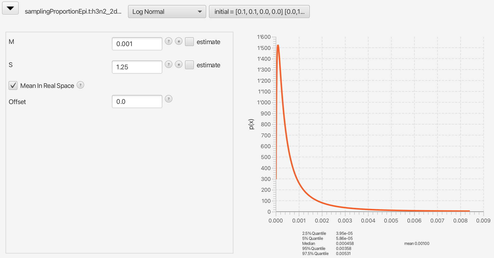
In setting the migration rate prior, consider that the migration rate governs the speed of movement of infected individuals between the locations in question: Hong Kong and New Zealand. For the purpose of the tutorial, we will assume that a given infected individual has only a 10% chance of visiting the other country in any given year.
Expand the migration rate prior by clicking the arrow to the left of migrationRateEpi.t:h3n2_2deme.
Select Exponential from the drop-down list of distributions.
Set the mean value to 0.1.
Our use of an Exponential distribution rather than a Log Normal distribution here is a practical consideration to improve mixing of this tutorial analysis. In a real analysis one should think carefully about how to set a prior for this parameter.
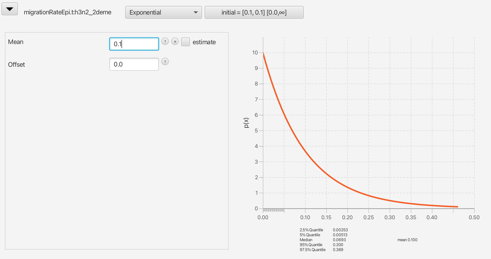
We will also set the prior for the clock rate to a distribution that is in accordance with what we know about seasonal influenza, i.e. it’s mean substitution rate is around $5\times 10^{-3}$ substitutions per site per year.
Expand the clock rate prior by clicking the arrow to the left of clockRate.c:h3n2_2deme
Select Log Normal from the drop-down list of distributions.
Set the M value to 0.005 and the S value to 0.5.
Make sure to check the Mean in Real Space checkbox.
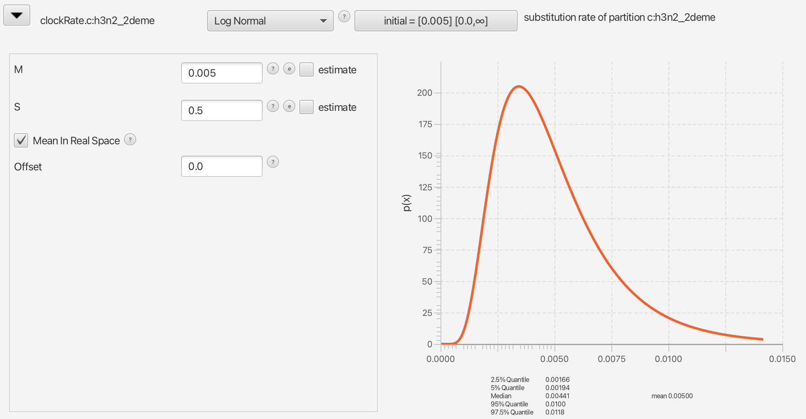
Saving the configuration
We will leave the MCMC panel settings to their default values.
Save the configuration file as h3n2-bdmmprime.xml. (Be sure to note where you have saved it!)
Running the analysis using BEAST
To run the analysis, simply start BEAST 2 in the manner appropriate for your platform, then select the configuration file you generated in the last section as the input.
Note that this particular analysis can take quite some time to run to completion. (On a MacBook Pro with 3.1 GHz Intel Core i5 processor it takes about 3 hours for 10’000’000 samples.) Try to run it and observe the results, but for the purpose of finishing the tutorial in a reasonable time, check out the provided log file to see the results.
Analyzing the results
The results of the analysis primarily consist of two parts:
- The parameter log, which is written to the file
h3n2-bdmmprime.log. - The multi-type tree log, which is written to
h3n2-bdmmprime.h3n2_2deme.typed.trees.
The additional file h3n2-bdmmprime.h3n2_2deme.typed.node.trees is the
TreeAnnotator-compatible file we’ll use to assemble a summary tree.
(The h3n2-bdmmprime.h3n2_2deme.trees file is a tree log containing the
trees without any type information. It is safe to ignore this for now.)
Parameter log file analysis
We can use the program Tracer to view the parameter log file.
Start Tracer and then press the
+button in the top-left hand corner of the window (underTrace File).Select the log file for this analysis (
h3n2-bdmmprime.log) from the file selection dialog box. (You can also simply drag your log file from the file browser to the Tracer window.
The Traces table will now be populated with parameters and summary
statistics corresponding to our multitype birth-death analysis.
Important traces are:
-
ReSPEpi.HongKongandReSPEpi.NewZealand: These give the effective reproduction numbers Hong Kong and New Zealand, respectively. -
becomeUninfectiousRateSPEpi: This is the overall become uninfectious rate. -
migrationRateSPEpi.HongKong_to_NewZealandandmigrationRateSPEpi.NewZealand_to_HongKong: These give the (per lineage per year) migration rates from Hong Kong to New Zealand and vice versa. -
typeMappedTree.count_HongKong_to_NewZealandandtypeMappedTree.count_NewZealand_to_HongKong: this gives the number of ancestral migrations from Hong Kong to New Zealand and vice versa on the inferred tree.
The tabs at the top-right of the window can be used to display one or more selected traces in various ways. We first look at the become uninfectious rate.
Select the
becomeUninfectiousRateSPEpitrace.
You should now see something similar to the figure below.
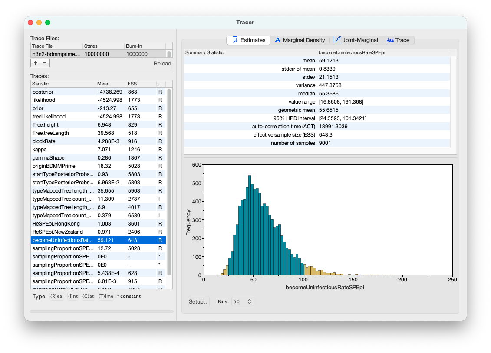
The 95% HPD for the parameter is fairly broad ([24, 101]), which is perhaps unsurprising given that we’re only using 60 sequences here. The mean value is 59 events per host per year, which gives us an expected infectious period of just over 6 days.
Next, we consider the reproductive number.
Select the two Re traces (
ReSPEpi.HongKongandReSPEpi.NewZealand) and choosing theMarginal Densitypanel.From the “Legend” drop-down list under the plot, select “Top-Left”.
Tracer now displays a comparison between the sampled population size marginal posterior distributions (see below).
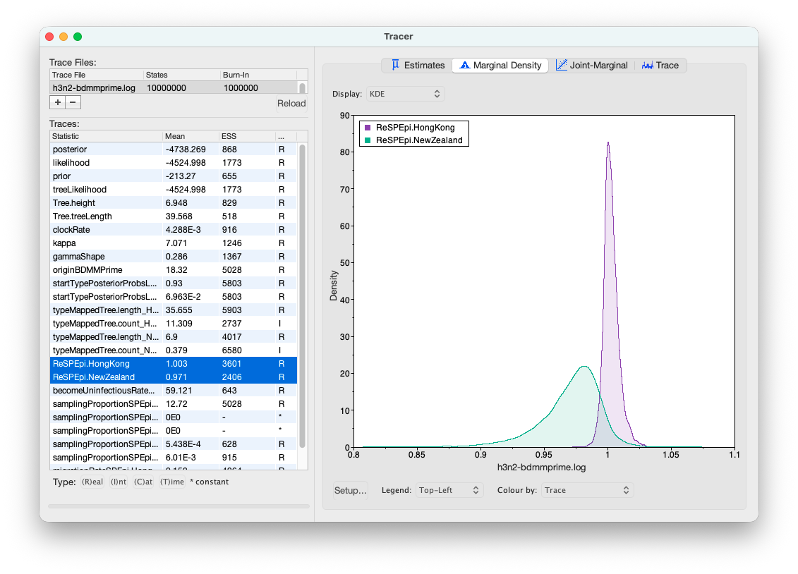
Looking at the posterior distributions we can not see any significant difference in R0 between the two demes. While the distributions are visibly different, they cover the same parameter range (deme 1 95% HPD interval [0.9922, 1.0258], deme 2 95% HPD interval [0.9057, 1.038]), so the values are indistinguishable through such analysis.
In the case of our pre-cooked analysis all the ESS values are greater than 200, the arbitrary threshold for acceptability. However, it might happen that some values have not yet reached the appropriate ESS in your own analysis.
If this is the case and your analysis was part of a serious study you would want to run the chain for another few million iterations to improve the ESS values. (In BEAST 2, analyses can be resumed – the samples you already have need not be wasted.)
Tree log visualization
The popular phylogenetic tree visualizer FigTree can be used to visualize the sampled trees. However, Figtree can be quite slow with MultiTypeTree log files, so for this tutorial we suggest using IcyTree to view tree log files. IcyTree is a tree viewer that runs in your web browser.
Open the IcyTree web page in your web browser.
Select
Load from filefrom theFilemenu, then select theh3n2-bdmmprime.h3n2_2deme.typed.treestree log file using the file selection dialog. (Alternatively, you can simply drag the log file into your browser window.)
Once the file is loaded you will see the first tree it contains.
In order to select a different tree, hover the mouse pointer over the box in the lower-left corner of the window.
This box will expand to a small dialog containing buttons allowing you to navigate between trees.
The < and > buttons move in steps of 1 tree, while << and >> move 10% of the tree file.
You can also directly enter the index of a tree.
Initially the tree edges will be uncoloured.
To colour the edges according to the edge type (this is the strain location in our case), navigate to Style > Colour edges by and select type.
A legend and axis can be added by choosing Display legend and Axis > Age from the same menu.
You can browse the trees from your posterior sample (as in the figure below) to look at the traits they share, however in general we need some sort of a summary to be able to draw conclusions from our tree sample.
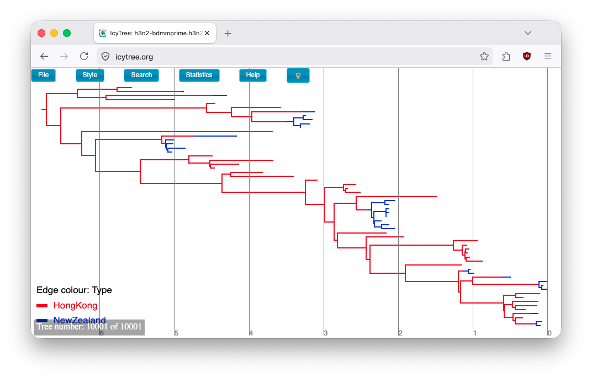
Producing a summary tree using TreeAnnotator
We can make better use of our analysis results by using the
TreeAnnotator program which is distributed with BEAST2 to analyze
the sample of trees which was produced by our MCMC run. Until recently
the maximum clade credibility tree (MCC) has been the default
summary method in TreeAnotator.
To produce MCC trees, TreeAnotator takes the set of trees and find the best supported tree by maximising the product of the posterior clade probabilities. It will then annotate this representative summary tree with the mean ages of all the nodes and the corresponding 95% HPD ranges as well as the posterior clade probability for each node.
Another point estimate, called a conditional clade distribution tree (CCD) has been proposed (Berling et al., 2025). This has been shown to outperform MCC in terms of accuracy (based on Robinson-Foulds distance to the true tree) and precision (how different are the point estimates calculated for replicate MCMC chains). CCD methods may produce a tree that would be well supported but has not been sampled during MCMC. This is beneficial for large trees and complex parameter regimes. Since both methods are still widely used, we show how to use them to summarise the posterior tree distribution.
To save time, you may run just one method and compare it to the other using the example below.
Producing an MCC summary tree
Start TreeAnnotator.
Set the Burnin percentage to 10% to discard the first 10% of trees in the log file.
Set the Target tree type to the Maximum clade credibility tree and set Node heights to Mean heights.
Select the
h3n2-bdmmprime.h3n2_2deme.typed.node.treestree file as the input file andh3n2-bdmmprime.h3n2_2deme.mcc_summary.treeas the output file.Pressing the Run button will produce an annotated summary tree.
The setup can be seen in the figure below.
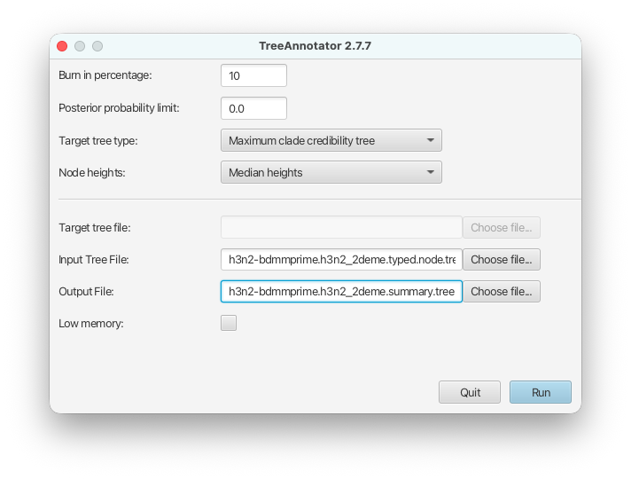
Producing CCD0 summary tree
To produce CCD0 summary tree, you will first need to install the CCD package.
Open BEAUTi.
Select File > Manage packages.
Select CCD package in the list and select Install/Upgrade.
Close BEAUTi.
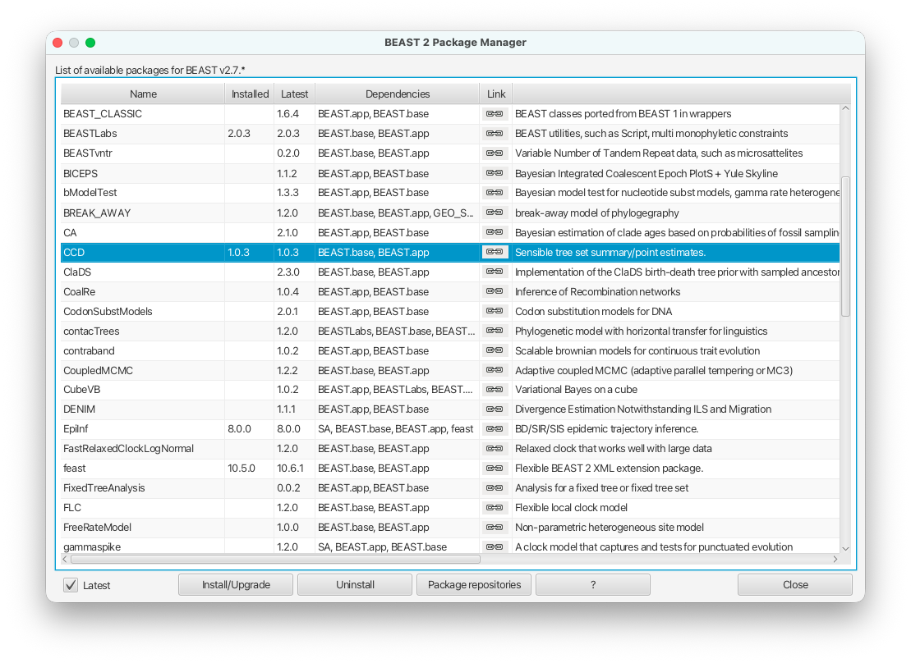
Now you can proceed to make CCD0 tree. Use the exactly same set up as for MCC tree but select MAP (CCD0) as Target tree type and h3n2-bdmmprime.h3n2_2deme.ccd0_summary.tree as the output file.
Visualising the summary tree
We now visualise the summary trees.
Open IcyTree once more (maybe open it in a new browser tab).
Choose
File > Load from file, then use file selection dialog and select eitherh3n2-bdmmprime.h3n2_2deme.mcc_summary.treeorh3n2-bdmmprime.h3n2_2deme.ccd0_summary.treeto load MCC or CCD0 summary tree, respectively.Select
Style > Colour nodes by > typeand display the legend and time axis as above.Open the
Stylemenu and selectNode height error bars > height_95%_HPDto add error bars to the internal node heights.Open the
Stylemenu and selectRelative edge width > type.prob.
Our choice to colour the nodes rather than the branches is due to the summary methods only summarizing the type at internal nodes: colouring the branches with these values would produce a misleading representation.
Once these style preferences have been set, you should see something similar to the MCC or CCD0 trees shown in the figures below.
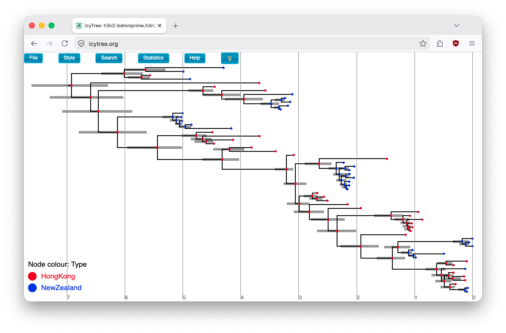
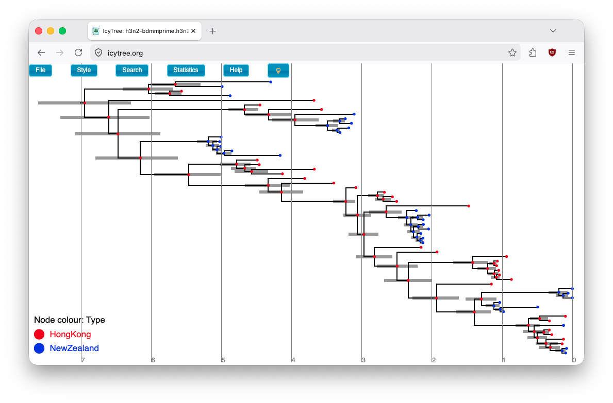
Here we have a full consensus tree annotated by the locations at coalescence nodes and showing node height uncertainty.
This is a much more comprehensive summary of the phylogenetic side of our analysis.
One thing to pay attention to here is that the most probable root location in the summary tree is Hong Kong .
Hovering the mouse cursor over the tiny edge above the root will bring up a table in which posterior probability of the displayed root location (type.prob) can be seen.
In this analysis we see that it is well over 95%.
The analysis therefore strongly supports a Hong Kong origin over a New Zealand origin for this flu sample.
When interpreting these results however, it is crucial to revisit the assumptions which we’ve made through our modelling choices. Most importantly, we have conducted this analysis under a two-deme model which assumes that only Hong Kong and New Zealand exist as possible locations for infected individuals. In reality of course, while the samples themselves originated from these two locations, the lineages ancestral to these samples were not subject to this constraint. Thus, if anything can be drawn at all from this analysis, it is only that the likely location of the common ancestor may have been more closely connected to Hong Kong than New zealand.
MCC and CCD0 summary tree comparison (Optional)
Now, compare the figures for MCC and CCD0 summary trees. Can you see some differences?
One of the advantages of the CCD0 summary method is that it can produce a likely summary tree topology even when that exact topology does not include in the set produced by the MCMC. This capabiility makes it more suitable than MCC, particularly for analyses in which the tree topology is not well resolved. Knowing this, what observations can you make about our sample?
Acknowledgment
The content of this tutorial is based on the Structured birth-death model tutorial by Denise Kühnert and Jūlija Pečerska.
Useful Links
- Multi-type birth-death process package: https://tgvaughan.github.io/BDMM-Prime
- BEAST 2 website and documentation: http://www.beast2.org/
- BEAST 2 book: Bayesian Evolutionary Analysis with BEAST 2 (Drummond & Bouckaert, 2014)
Relevant References
- Kühnert, D., Stadler, T., Vaughan, T. G., & Drummond, A. J. (2016). Phylodynamics with Migration: A Computational Framework to Quantify Population Structure from Genomic Data. Molecular Biology and Evolution. https://doi.org/10.1093/molbev/msw064
- Vaughan, T. G., Kühnert, D., Popinga, A., Welch, D., & Drummond, A. J. (2014). Efficient Bayesian inference under the structured coalescent. Bioinformatics, 30(16), 2272–2279. https://doi.org/10.1093/bioinformatics/btu201
- Vaughan, T. G., & Stadler, T. (2025). Bayesian Phylodynamic Inference of Multitype Population Trajectories Using Genomic Data. Molecular Biology and Evolution, 42(6). https://doi.org/10.1093/molbev/msaf130
- Bouckaert, R., Heled, J., Kühnert, D., Vaughan, T., Wu, C.-H., Xie, D., Suchard, M. A., Rambaut, A., & Drummond, A. J. (2014). BEAST 2: a software platform for Bayesian evolutionary analysis. PLoS Computational Biology, 10(4), e1003537. https://doi.org/10.1371/journal.pcbi.1003537
- Berling, L., Klawitter, J., Bouckaert, R., Xie, D., Gavryushkin, A., & Drummond, A. J. (2025). Accurate Bayesian phylogenetic point estimation using a tree distribution parameterized by clade probabilities. PLOS Computational Biology, 21(2), e1012789.
- Drummond, A. J., & Bouckaert, R. R. (2014). Bayesian evolutionary analysis with BEAST 2. Cambridge University Press.
Citation
If you found Taming the BEAST helpful in designing your research, please cite the following paper:
Joëlle Barido-Sottani, Veronika Bošková, Louis du Plessis, Denise Kühnert, Carsten Magnus, Venelin Mitov, Nicola F. Müller, Jūlija Pečerska, David A. Rasmussen, Chi Zhang, Alexei J. Drummond, Tracy A. Heath, Oliver G. Pybus, Timothy G. Vaughan, Tanja Stadler (2018). Taming the BEAST – A community teaching material resource for BEAST 2. Systematic Biology, 67(1), 170–-174. doi: 10.1093/sysbio/syx060